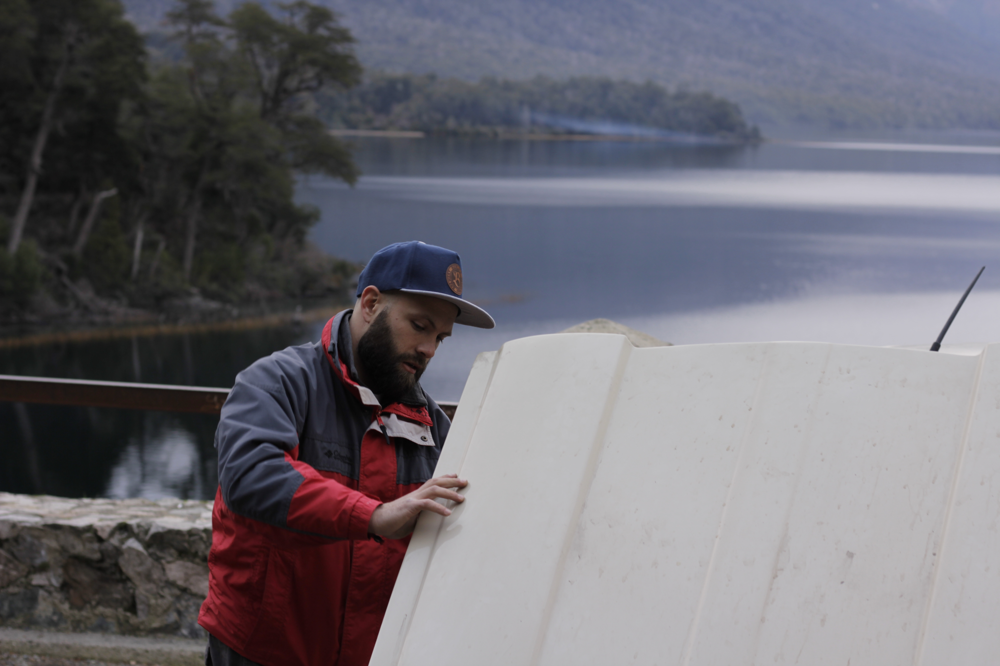

Platform migration
GitHub Enterprise Migration
Large-scale repository migration, governance alignment, access management and platform adoption.
SRE / DevOps / Release Engineer
SRE / DevOps / Release Engineer focused on automation, platform engineering, cloud infrastructure and continuous delivery.
About
My professional path did not start in technology. For more than a decade, I worked in the railway industry, eventually becoming a train driver. That experience shaped the way I think about responsibility, systems, timing, and operational discipline.
Over time, I became increasingly interested in software, automation, and infrastructure. Today I work as an SRE / DevOps / Release Engineer, helping teams improve delivery, reliability, and release processes.
Outside software, I build and document mechanical projects, from classic vehicles to personal experiments. This site is both a professional portfolio and a living notebook about building systems, building machines, and building myself.
DevOps Lab
A space for hands-on infrastructure, CI/CD, release automation, and operational documentation.
Platform migration
Large-scale repository migration, governance alignment, access management and platform adoption.
API platform
API gateway ownership mapping, migration planning and squad onboarding.
Cloud infrastructure
Infrastructure as Code, CloudFront, S3 static hosting, CI/CD pipelines and cloud experiments.
Automation
Cursor, Codex, AI agents, operational automation and documentation workflows.
Media Lab
YouTube, automotive projects, workshop logs and road stories - documenting the process of building, restoring and learning in public.
Classic cars
Travel memories, simple mechanics and the stories that come from learning on the road with a classic Renault 4.
Restoration
A long-term mechanical project about diagnosis, repair sequences, documentation and rebuilding patiently.
Workshop
Notes and videos from hands-on experiments, tools, repairs and the practical side of learning by doing.
Road stories
A media layer for classic vehicles, routes, memories and the process of building in public.
Machines
Machines teach diagnosis, patience, sequencing, and respect for cause and effect. Those lessons carry directly into engineering production systems.


A symbol of movement, simple mechanics, and memorable road stories.
A long-term project about rebuilding carefully, learning by doing, and respecting the original machine.
Featured Projects
Selected work that connects enterprise migration, API platform coordination, cloud delivery and AI-assisted operations.
Release Engineering / Platform Coordination
Coordinated repository migrations from legacy platforms to GitHub Enterprise, supporting governance alignment, access management, enterprise onboarding and migration tracking across multiple engineering teams.
GitHub Enterprise, Bitbucket, Okta, EMU, Git
Platform Migration
Supported API platform migration initiatives through ownership mapping, migration planning, documentation and squad onboarding workflows.
Kong, GitHub, Terraform, AWS
Personal Project
Built and deployed a cloud-hosted portfolio platform using Infrastructure as Code, CI/CD automation and global content delivery.
HTML, CSS, GitHub Actions, Terraform, AWS S3, CloudFront
Automation Lab
Experimenting with AI agents, operational automation, documentation workflows and productivity systems using modern AI tooling.
Cursor, Codex, Ollama, GitHub, Python
Journal
Notes on release engineering, infrastructure, restoration, and the personal process of becoming better at the work.
A good pipeline does more than run commands. It builds trust in a change before that change reaches users.
Start with symptoms, inspect the system, make one change at a time, and verify the result.
The work is technical, but the practice is also personal: consistency, focus, and the humility to keep learning.
Next Milestones
Add real photos from the Renault 4, Peugeot 504, and DevOps Lab work.
Publish the first Peugeot 504 restoration log.
Create a dedicated DevOps Lab page for technical project writeups.
Add a project timeline that connects releases, repairs, and learning notes.
Contact
This platform is a living portfolio for practical engineering work, mechanical projects, and personal learning.